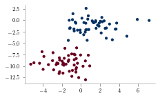
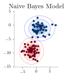
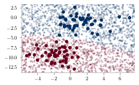
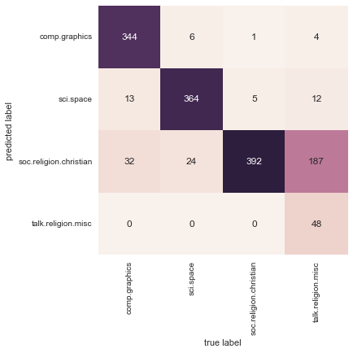

%matplotlib inline
import numpy as np
import matplotlib.pyplot as plt
from latexify import *Gaussian Naive Bayes
Perhaps the easiest naive Bayes classifier to understand is Gaussian naive Bayes. In this classifier, the assumption is that data from each label is drawn from a simple Gaussian distribution. Imagine that you have the following data:
latexify()
from sklearn.datasets import make_blobs
X, y = make_blobs(100, 2, centers=2, random_state=2, cluster_std=1.5)
plt.scatter(X[:, 0], X[:, 1], c=y, s=10, cmap='RdBu');
format_axes(plt.gca())
ax.set_aspect('equal')
from sklearn.datasets import make_blobs
X, y = make_blobs(100, 2, centers=2, random_state=2, cluster_std=1.5)
fig, ax = plt.subplots()
ax.scatter(X[:, 0], X[:, 1], c=y, s=10, cmap='RdBu')
ax.set_title('Naive Bayes Model', size=14)
xlim = (-8, 8)
ylim = (-15, 5)
xg = np.linspace(xlim[0], xlim[1], 60)
yg = np.linspace(ylim[0], ylim[1], 40)
xx, yy = np.meshgrid(xg, yg)
Xgrid = np.vstack([xx.ravel(), yy.ravel()]).T
for label, color in enumerate(['red', 'blue']):
mask = (y == label)
mu, std = X[mask].mean(0), X[mask].std(0)
P = np.exp(-0.5 * (Xgrid - mu) ** 2 / std ** 2).prod(1)
Pm = np.ma.masked_array(P, P < 0.03)
ax.pcolorfast(xg, yg, Pm.reshape(xx.shape), alpha=0.5,
cmap=color.title() + 's')
ax.contour(xx, yy, P.reshape(xx.shape),
levels=[0.01, 0.1, 0.5, 0.9],
colors=color, alpha=0.2)
ax.set(xlim=xlim, ylim=ylim)
format_axes(ax)
ax.set_aspect('equal')
One extremely fast way to create a simple model is to assume that the data is described by a Gaussian distribution with no covariance between dimensions. This model can be fit by simply finding the mean and standard deviation of the points within each label, which is all you need to define such a distribution. The result of this naive Gaussian assumption is shown in the following figure:

The ellipses here represent the Gaussian generative model for each label, with larger probability toward the center of the ellipses. With this generative model in place for each class, we have a simple recipe to compute the likelihood \(P({\rm features}~|~L_1)\) for any data point, and thus we can quickly compute the posterior ratio and determine which label is the most probable for a given point.
This procedure is implemented in Scikit-Learn’s sklearn.naive_bayes.GaussianNB estimator:
from sklearn.naive_bayes import GaussianNB
model = GaussianNB()
model.fit(X, y);Now let’s generate some new data and predict the label:
rng = np.random.RandomState(0)
Xnew = [-6, -14] + [14, 18] * rng.rand(2000, 2)
ynew = model.predict(Xnew)Now we can plot this new data to get an idea of where the decision boundary is:
plt.scatter(X[:, 0], X[:, 1], c=y, s=20, cmap='RdBu')
lim = plt.axis()
plt.scatter(Xnew[:, 0], Xnew[:, 1], c=ynew, s=5, cmap='RdBu', alpha=0.2)
plt.axis(lim);
format_axes(plt.gca())
ax.set_aspect('equal')
We see a slightly curved boundary in the classifications—in general, the boundary in Gaussian naive Bayes is quadratic.
A nice piece of this Bayesian formalism is that it naturally allows for probabilistic classification, which we can compute using the predict_proba method:
yprob = model.predict_proba(Xnew)
yprob[-8:].round(2)array([[ 0.89, 0.11],
[ 1. , 0. ],
[ 1. , 0. ],
[ 1. , 0. ],
[ 1. , 0. ],
[ 1. , 0. ],
[ 0. , 1. ],
[ 0.15, 0.85]])The columns give the posterior probabilities of the first and second label, respectively. If you are looking for estimates of uncertainty in your classification, Bayesian approaches like this can be a useful approach.
Of course, the final classification will only be as good as the model assumptions that lead to it, which is why Gaussian naive Bayes often does not produce very good results. Still, in many cases—especially as the number of features becomes large—this assumption is not detrimental enough to prevent Gaussian naive Bayes from being a useful method.
Multinomial Naive Bayes
The Gaussian assumption just described is by no means the only simple assumption that could be used to specify the generative distribution for each label. Another useful example is multinomial naive Bayes, where the features are assumed to be generated from a simple multinomial distribution. The multinomial distribution describes the probability of observing counts among a number of categories, and thus multinomial naive Bayes is most appropriate for features that represent counts or count rates.
The idea is precisely the same as before, except that instead of modeling the data distribution with the best-fit Gaussian, we model the data distribuiton with a best-fit multinomial distribution.
Example: Classifying Text
One place where multinomial naive Bayes is often used is in text classification, where the features are related to word counts or frequencies within the documents to be classified. We discussed the extraction of such features from text in Feature Engineering; here we will use the sparse word count features from the 20 Newsgroups corpus to show how we might classify these short documents into categories.
Let’s download the data and take a look at the target names:
from sklearn.datasets import fetch_20newsgroups
data = fetch_20newsgroups()
data.target_names['alt.atheism',
'comp.graphics',
'comp.os.ms-windows.misc',
'comp.sys.ibm.pc.hardware',
'comp.sys.mac.hardware',
'comp.windows.x',
'misc.forsale',
'rec.autos',
'rec.motorcycles',
'rec.sport.baseball',
'rec.sport.hockey',
'sci.crypt',
'sci.electronics',
'sci.med',
'sci.space',
'soc.religion.christian',
'talk.politics.guns',
'talk.politics.mideast',
'talk.politics.misc',
'talk.religion.misc']For simplicity here, we will select just a few of these categories, and download the training and testing set:
categories = ['talk.religion.misc', 'soc.religion.christian',
'sci.space', 'comp.graphics']
train = fetch_20newsgroups(subset='train', categories=categories)
test = fetch_20newsgroups(subset='test', categories=categories)Here is a representative entry from the data:
print(train.data[5])From: dmcgee@uluhe.soest.hawaii.edu (Don McGee)
Subject: Federal Hearing
Originator: dmcgee@uluhe
Organization: School of Ocean and Earth Science and Technology
Distribution: usa
Lines: 10
Fact or rumor....? Madalyn Murray O'Hare an atheist who eliminated the
use of the bible reading and prayer in public schools 15 years ago is now
going to appear before the FCC with a petition to stop the reading of the
Gospel on the airways of America. And she is also campaigning to remove
Christmas programs, songs, etc from the public schools. If it is true
then mail to Federal Communications Commission 1919 H Street Washington DC
20054 expressing your opposition to her request. Reference Petition number
2493.
In order to use this data for machine learning, we need to be able to convert the content of each string into a vector of numbers. For this we will use the TF-IDF vectorizer (discussed in Feature Engineering), and create a pipeline that attaches it to a multinomial naive Bayes classifier:
from sklearn.feature_extraction.text import TfidfVectorizer
from sklearn.naive_bayes import MultinomialNB
from sklearn.pipeline import make_pipeline
model = make_pipeline(TfidfVectorizer(), MultinomialNB())With this pipeline, we can apply the model to the training data, and predict labels for the test data:
model.fit(train.data, train.target)
labels = model.predict(test.data)Now that we have predicted the labels for the test data, we can evaluate them to learn about the performance of the estimator. For example, here is the confusion matrix between the true and predicted labels for the test data:
from sklearn.metrics import confusion_matrix
mat = confusion_matrix(test.target, labels)
sns.heatmap(mat.T, square=True, annot=True, fmt='d', cbar=False,
xticklabels=train.target_names, yticklabels=train.target_names)
plt.xlabel('true label')
plt.ylabel('predicted label');
Evidently, even this very simple classifier can successfully separate space talk from computer talk, but it gets confused between talk about religion and talk about Christianity. This is perhaps an expected area of confusion!
The very cool thing here is that we now have the tools to determine the category for any string, using the predict() method of this pipeline. Here’s a quick utility function that will return the prediction for a single string:
def predict_category(s, train=train, model=model):
pred = model.predict([s])
return train.target_names[pred[0]]Let’s try it out:
predict_category('sending a payload to the ISS')'sci.space'predict_category('discussing islam vs atheism')'soc.religion.christian'predict_category('determining the screen resolution')'comp.graphics'Remember that this is nothing more sophisticated than a simple probability model for the (weighted) frequency of each word in the string; nevertheless, the result is striking. Even a very naive algorithm, when used carefully and trained on a large set of high-dimensional data, can be surprisingly effective.
When to Use Naive Bayes
Because naive Bayesian classifiers make such stringent assumptions about data, they will generally not perform as well as a more complicated model. That said, they have several advantages:
- They are extremely fast for both training and prediction
- They provide straightforward probabilistic prediction
- They are often very easily interpretable
- They have very few (if any) tunable parameters
These advantages mean a naive Bayesian classifier is often a good choice as an initial baseline classification. If it performs suitably, then congratulations: you have a very fast, very interpretable classifier for your problem. If it does not perform well, then you can begin exploring more sophisticated models, with some baseline knowledge of how well they should perform.
Naive Bayes classifiers tend to perform especially well in one of the following situations:
- When the naive assumptions actually match the data (very rare in practice)
- For very well-separated categories, when model complexity is less important
- For very high-dimensional data, when model complexity is less important
The last two points seem distinct, but they actually are related: as the dimension of a dataset grows, it is much less likely for any two points to be found close together (after all, they must be close in every single dimension to be close overall). This means that clusters in high dimensions tend to be more separated, on average, than clusters in low dimensions, assuming the new dimensions actually add information. For this reason, simplistic classifiers like naive Bayes tend to work as well or better than more complicated classifiers as the dimensionality grows: once you have enough data, even a simple model can be very powerful.
< Feature Engineering | Contents | In Depth: Linear Regression >